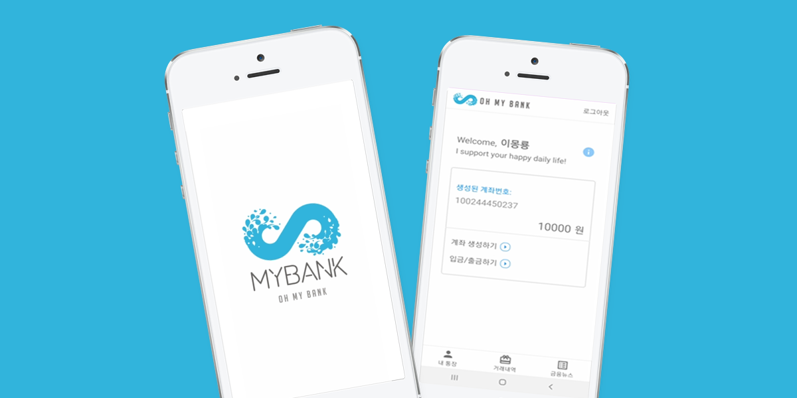

THE MISSION
OH MY BANK(이하 OMB) 프로젝트는 포트폴리오와 코틀린 공부 용도로 제작한 것으로
전반적인 부분을 혼자서 하였습니다.학원에서 자바를 배울 당시 'Bank App'이라는 이름으로 계좌를 생성, 입금, 출금을 하는 간단한 코드를 짜고, 최종적으로는 앱을 만들어보는 평가를 한 적이 있었는데, 혼자서 프로젝트를 할만한 게 뭐가 있을까? 고민하다 개인 블로그에 정리해둔 코드를 보았고, 마침 코틀린을 공부하고 있던터라 자바로 작성된 코드를 코틀린으로 변경해볼까? 라는 생각을 하게 됐습니다.
안드로이드 스튜디오를 사용해 UI 디자인과 코딩을 했고, DB로는 구글 파이어베이스를 이용, 첫 로그인 후 별도의 인증 없이 은행 관련 시스템을 사용할 수 있는 애플리케이션을 만들어봤습니다.

THE CONCEPT
OH MY BANK(이하 OMB)는 포트폴리오 용도로 제작된 애플리케이션으로, DB를 사용한 회원 관리와
계좌 생성, 입금, 출금, 거래 내역 등을 직관적인 디자인으로 보여줄 수 있도록 했습니다.안드로이드 스튜디오 프로그램을 사용했고, 코틀린과 자바로 코딩했습니다.